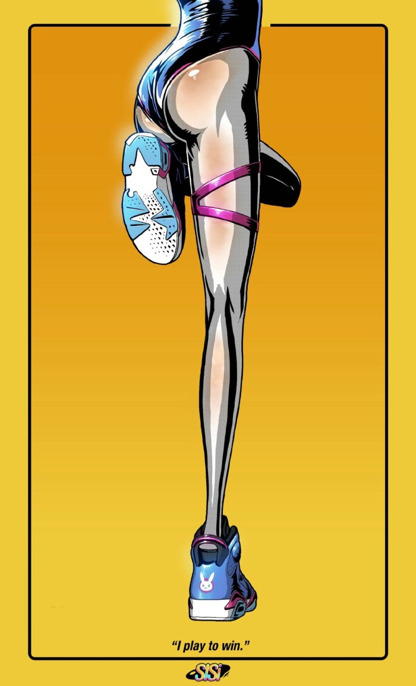
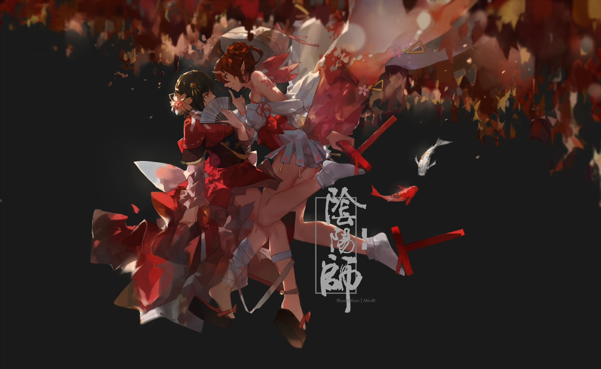
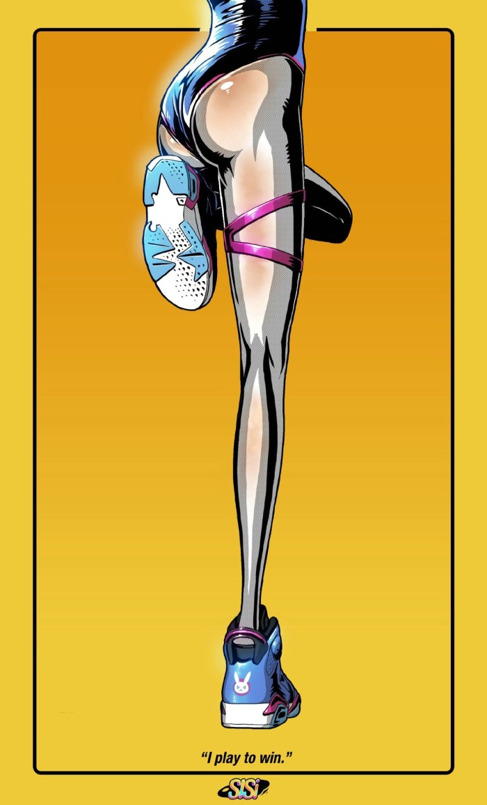
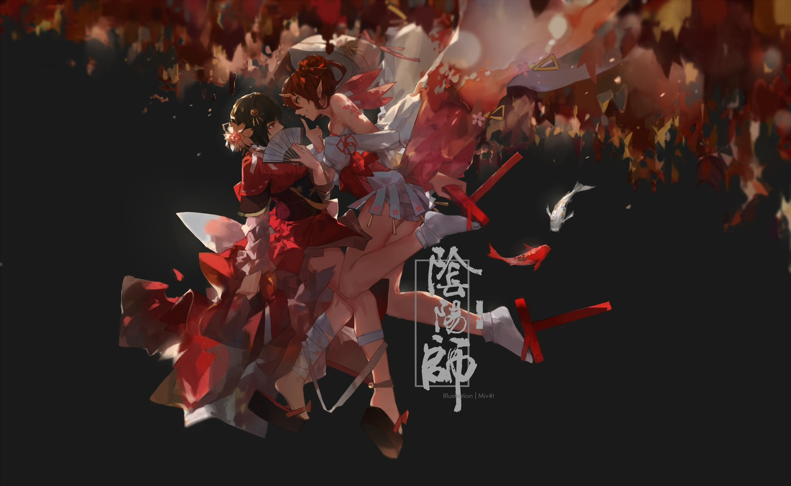

标题小标题
告诉你一个秘密:谢夏戈是个帅哥!
???虚线???
- 题目1
- - dd?弟弟?
- english
- - sb 谭安东
div,xxg
现在不知道说什么好了ctrl+w
天气是真的好 ....
很想回到从前.. 妈蛋
| 姓 | 名 | 年龄 |
|---|---|---|
| 谢 | 夏戈 | 18 |
| 柯 | 佳升 | 81 |
| 叶 | 彤 | 181 |
| 姓 | 名 | 年龄 |
|---|---|---|
| 谢 | 夏戈 | 18 |
| 柯 | 佳升 | 81 |
| 叶 | 彤 | 181 |
| 姓 | 名 | 年龄 |
|---|---|---|
| 谢 | 夏戈 | 18 |
| 柯 | 佳升 | 81 |
| 叶 | 彤 | 181 |
| 姓 | 名 | 年龄 |
|---|---|---|
| 谢 | 夏戈 | 18 |
| 柯 | 佳升 | 81 |
| 叶 | 彤 | 181 |
| 姓 | 名 | 年龄 |
|---|---|---|
| 谢 | 夏戈 | 18 |
| 柯 | 佳升 | 81 |
| 叶 | 彤 | 181 |


 



谢夏戈博客
谢夏戈除了长得帅以外 一无是处
也不知道什么时候才能学完,才能结束这种无聊的实验...
关闭提示框
.fade 和 .show 类用于设置提示框在关闭时的淡出和淡入效果：
我们可以在提示框中的 div 中添加 .alert-dismissable 类，然后在关闭按钮的链接上添加 class="close" 和 data-dismiss="alert" 类来设置提示框的关闭操作。
成功! 指定操作成功提示信息。
信息! 请注意这个信息。
警告! 设置警告信息。
错误! 失败的操作。
首选! 这是一个重要的操作信息。
次要的! 显示一些不重要的信息。
深灰色! 深灰色提示框。
浅灰色!浅灰色提示框。
按钮样式
按钮设置边框
不同大小的按钮
按钮组
.btn-group 类用于创建按钮组:
内嵌按钮组
按钮组设置下拉菜单: